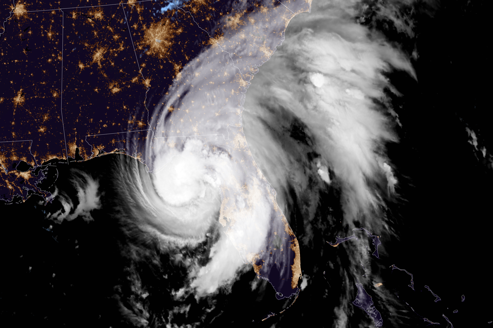
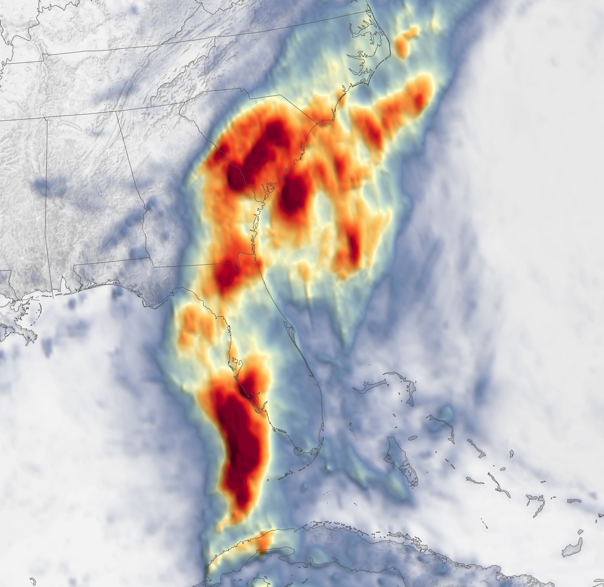
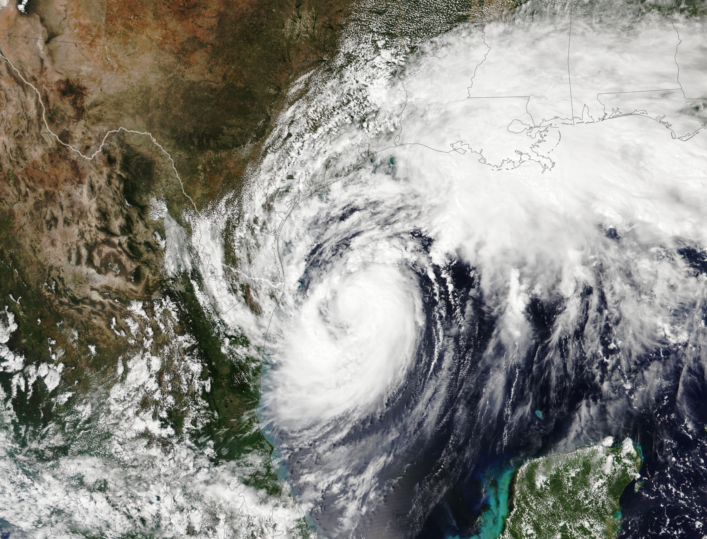
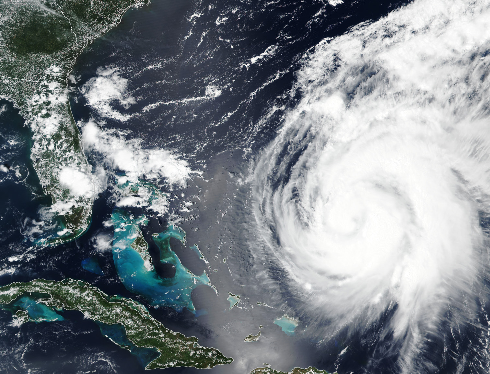
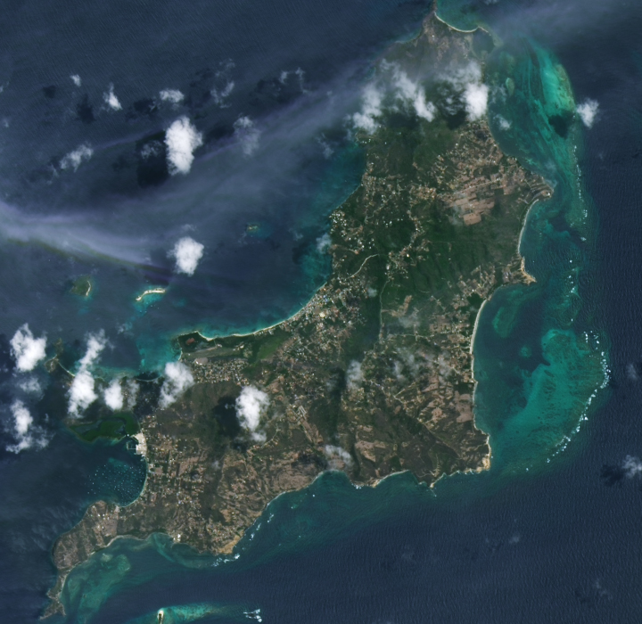
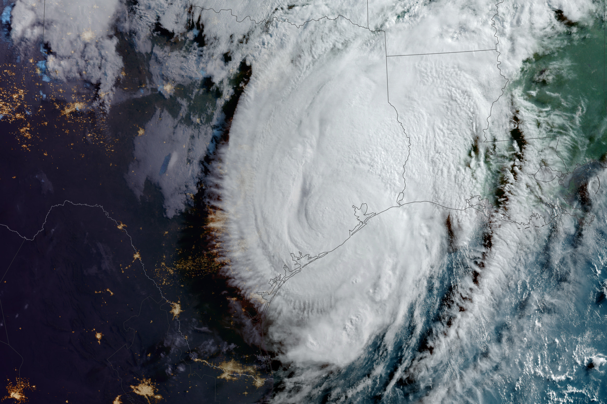

Temporada de Huracanes 2024 — Atlántico Norte






El huracán Debby, de categoría 1, azotó Steinhatchee, Florida, el 5 de agosto de 2024 a las 7 am, hora del Este.
Esta imagen satelital de la NASA-NOAA capturó a Debby solo horas antes de tocar tierra.
El lento movimiento de Debby amenazó con marejadas ciclónicas "potencialmente mortales" y lluvias torrenciales en el sureste de Estados Unidos.
La tormenta se debilitó después de tocar tierra, pero podría traer lluvia "potencialmente histórica" de hasta 30 pulgadas en algunas áreas.